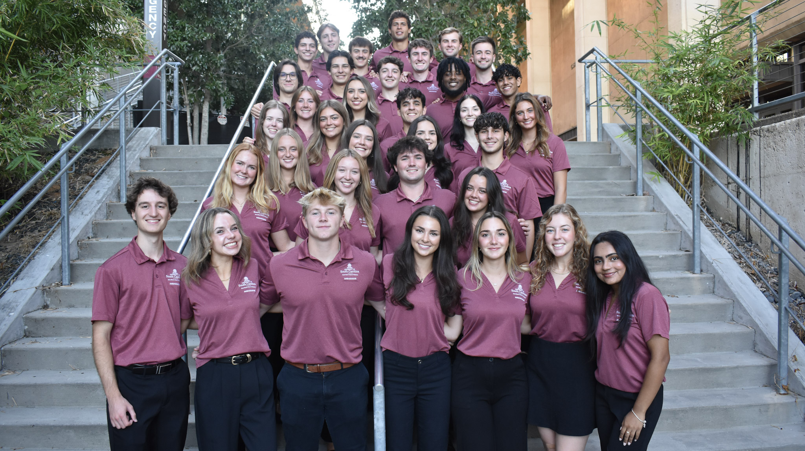
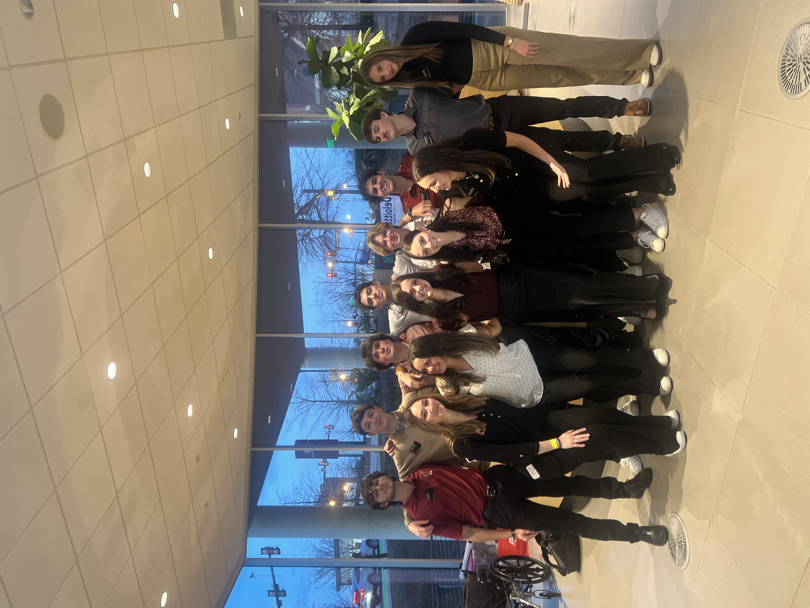
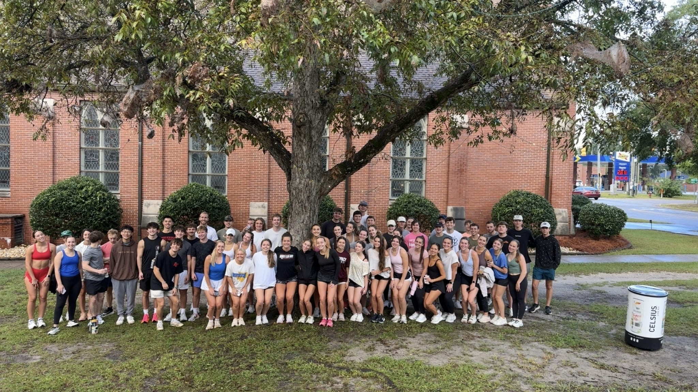
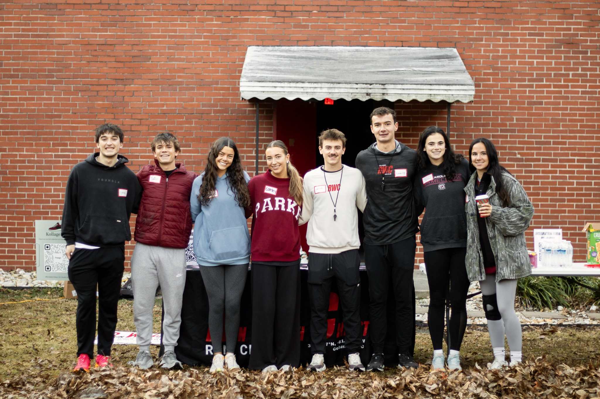
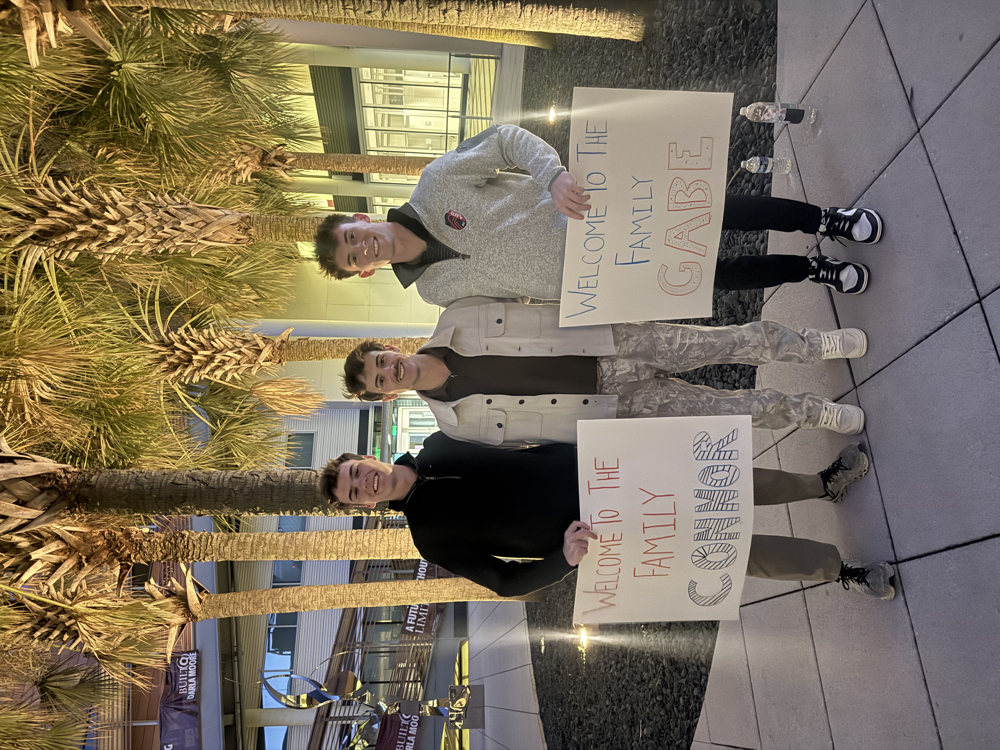
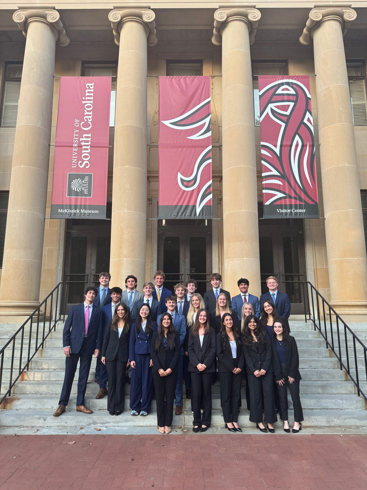

03 — Life at Carolina
Two Years in Moments







My professional experience spans finance, entrepreneurship, and operations - from founding a sneaker resale business that generated $220K in revenue, to managing financial operations for a healthcare startup, to working concessions at Augusta National during the Masters Tournament.
View Resume →As a member of the Carolina Finance and Investment Association's Freshman Finance Academy, I was admitted as one of 20 top-performing freshman finance majors into a competitive financial accelerator. The program culminated in a sell-side M&A capstone presentation delivered to finance faculty.
My partner and I analyzed Skechers as the target company, conducting a full public comps analysis, precedent transactions, and a DCF valuation using both exit multiple and perpetuity growth methods. Our blended, weighted-average valuation pegged enterprise value at approximately $7.66B, using Bloomberg Terminal and Capital IQ data throughout.
View Presentation →




